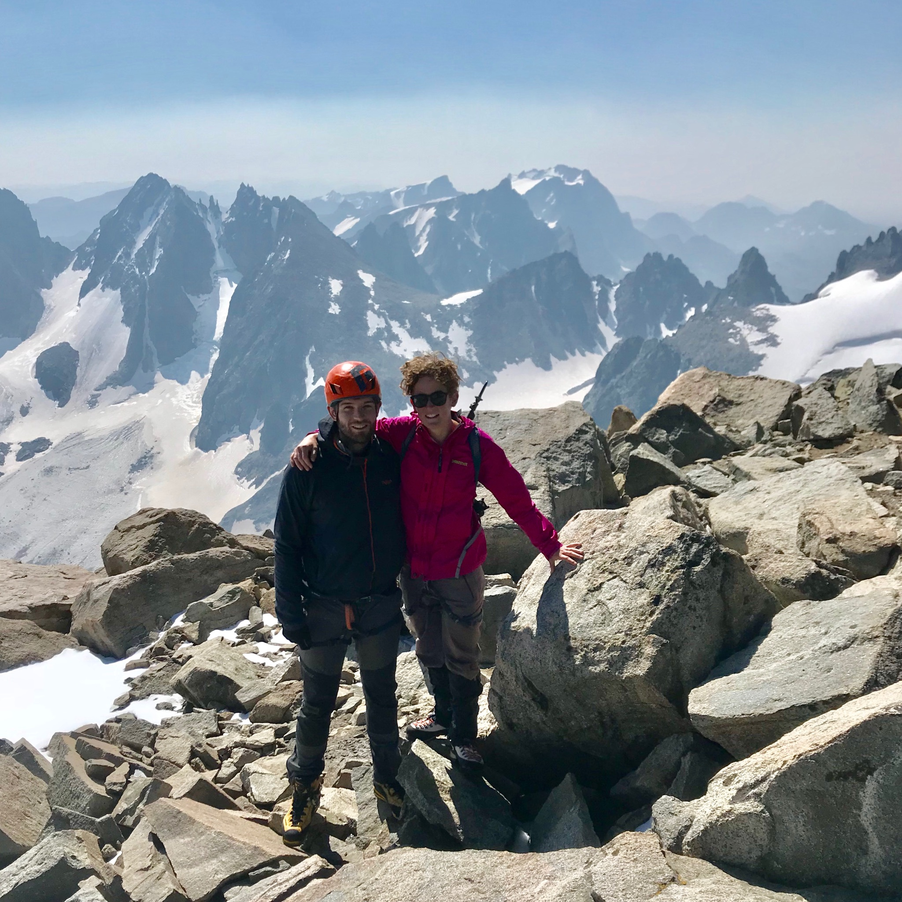
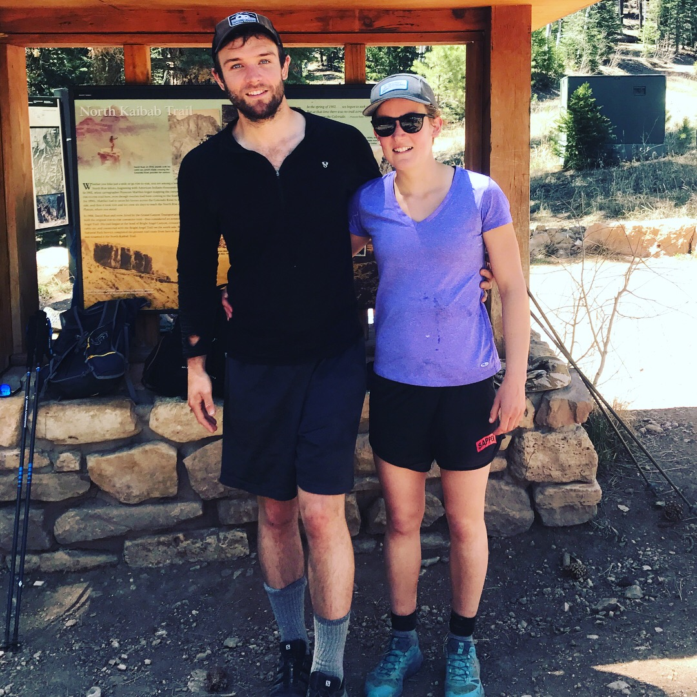
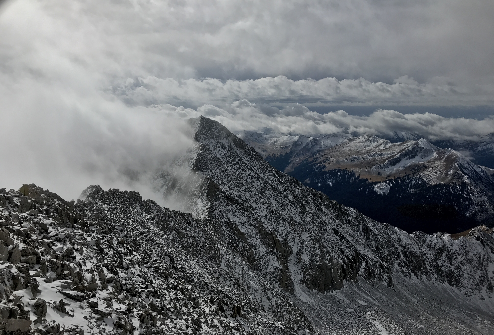
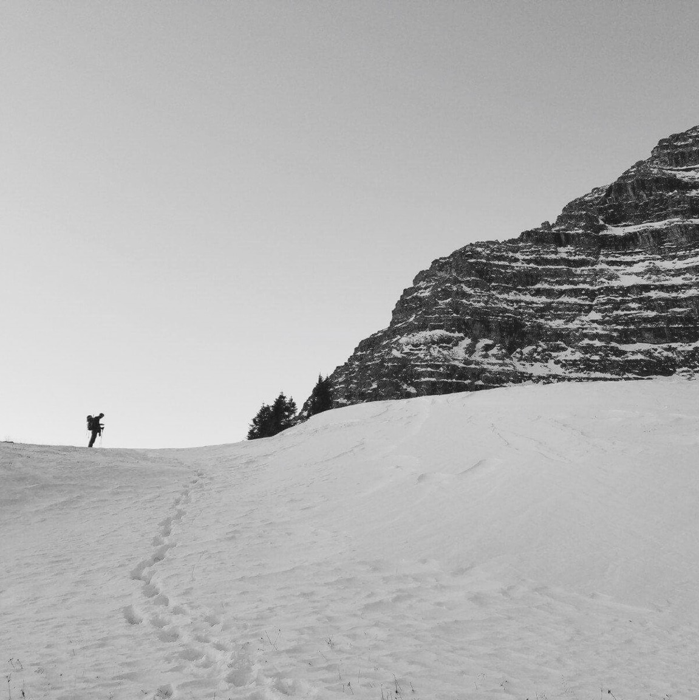
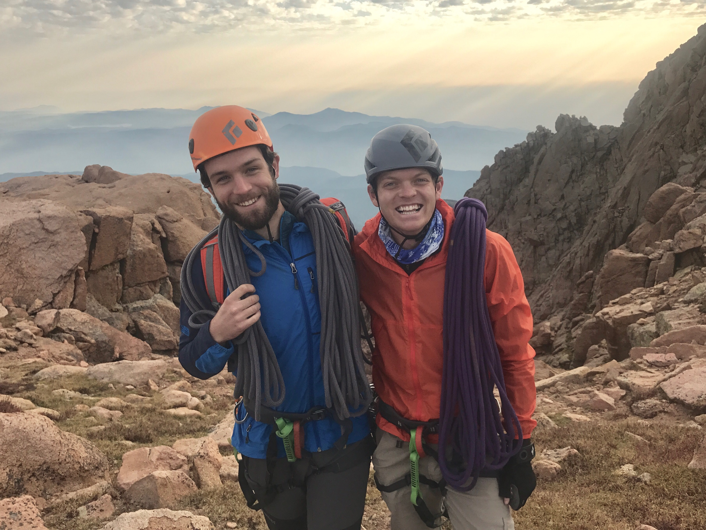
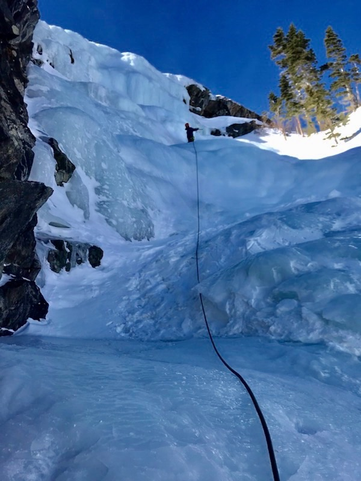
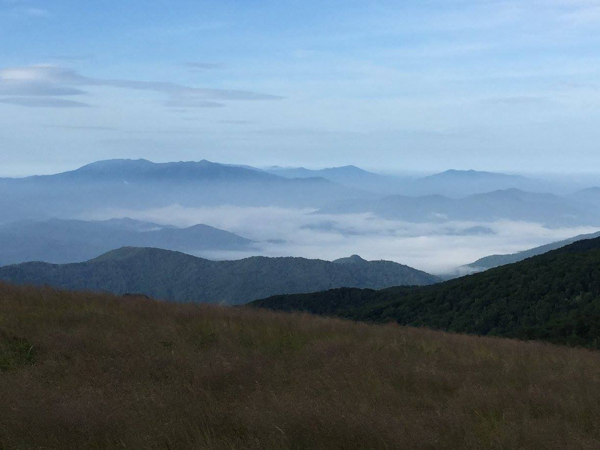
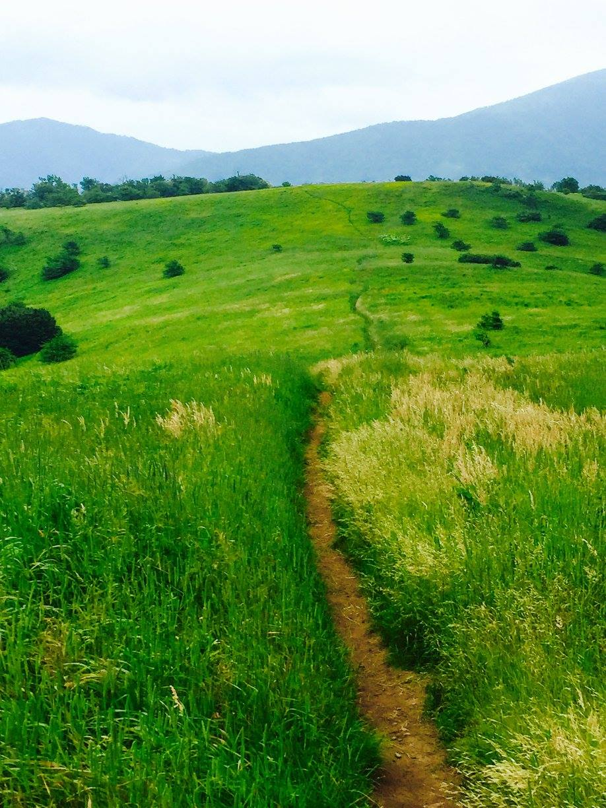
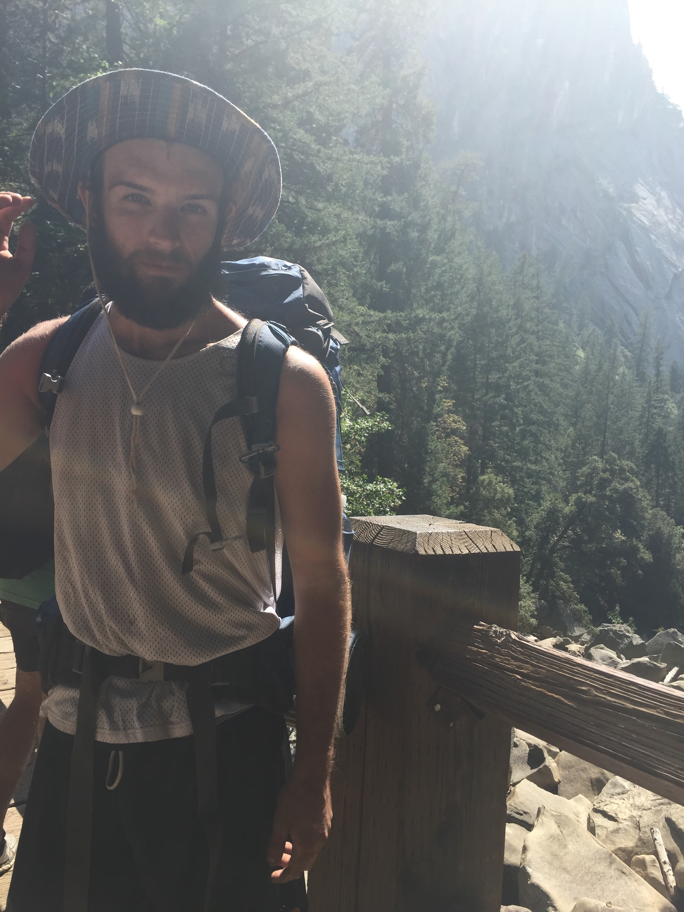

Summer 2019 trip to Pakistan. I was the only American to summit Gasherbrum 2 this year.
K2 in the distance .
Summit day as the sun was rising, Chogalisa in the distance
100 miles through Zion National Park.
Backpacking in remote Peru with Phoebe
Six day solo trip up Aconcagua.

Ecuador. Cotopaxi Volcano in the distance.

Maroon Bells


Walden on Mt. Timpanogos in Utah. We slept next to a big pack of mountain goats.

Ice climbing for the newspaper.

Gannett Peak in Wyoming. We encountered a kid up top in running shoes with no rope who was afraid. We helped him off with a rappel over the bergshrund on the descent. He proceeded to run off into the dusk.

Through the Grand Canyon and back, rim to rim to rim, for 47 miles.

Denali.

Climbing Montezumas Tower. Garden of the Gods.

Rainier via the Kautz Glacier.

Sand Dunes, Southern Colorado.


A fun day ice climbing.

This was a weird trip. Between forgetting my passport across the country, not getting a visa, and a volcanic eruption redirecting my flight, getting to Bolivia was full of fun.


Mexico! Pico de Orizaba


I was wandering southern Utah one summer and had planned to hike through the Buckskin Gulch slot canyon. But then I came across two Japanese guys whose car was stuck nearly veritcal in a ditch. They could barely speak English and we were very far from cell service, so I drove them out and helped them call for a tow. Turned out they had an extra permit to this elusive spot, the Wave.

Moab

I've been on top of all 58 Colorado 14ers, here are some of the pictures.
Snowmass

Four winter ascents in Colorado's Chicago Basin.

Sawtooth Traverse
Wilson-El Diente traverse.


Walden looking at the route ahead on Pyramid.
Longs Peak, January 2017
Walden
An alpine rock climb on Pikes Peak

Scottish Gully, Lincoln Falls

Appalachian Trail section hike, 2015. Tennessee, Virginia, North Carolina




Yosemite Valley, 2015.

“Mountains are not Stadiums where I satisfy my ambition to achieve, they are the cathedrals where I practice my religion.”
― Anatoli Boukreev
― Anatoli Boukreev